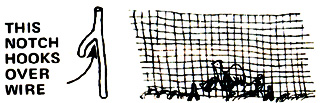

Mother's Down-Home Country Lore
Using broken potter as poultry grit by Gary and Ruth Magee, growing parsley by Mrs. Earl Crist, use cast off planters from the cemetery to start seedlings by June Fey, using a hooked stick to hold down chicken fencing by Doc and Leah Hunter, cleaning pots with spinach by Bob and Terri Ladd, hay bales by Steve Payne, Using a hot-water bottle with baby chicks by Irene Stewart, kerosene to soften boot leather, ringworm cure by Joan Michael, using a torch to remove window putty by Fosten Wilson, waterproof boots with hot grease by Danielle McGee, steel drum stove by Susan Jantzen, eucalyptus as a flea repellent by Peter Parks, sugum and manure a no-no by Sandy Henderson, goat horn button by Kitty Bunin, rain gutter to feed chicks by Lawrence Hamilton, diaper rash cure by Karon Durmer, loading hay on a wagon.
By Nancy Bubel
March/April 1977
Here's another fine batch of tips and hints from down-to-earth folks all over MOTHER land. And here are answers to the questions I get asked most often:
Sorry, but in order to "spread the wealth" as far as possible, we must limit our subscription swap offer to one to a contributor. Feet free to send along as many effective ideas as you like, however, since I naturally receive many duplicates (and your chances of submitting an unduplicated usable tip will be greater if you send in more than one).
And please do remember that we work several months ahead on MOTHER and that I have no way of knowing exactly when an accepted idea will pop up in this column. You'll be notified it and as soon as your hint is accepted ... but that doesn't necessarily mean you'll see it in print immediately.
And please, please remember that I'm just a distant outpost editor for Country Lore and nothing more. If you want to change your address, inquire about an old subscription, or otherwise conduct business with MOTHER, write directly to THE Mother Earth News(restricted), P.O. Box 70, Hendersonville, North Carolina 28739.
And, oh yes: When you submit an idea to this department, do be sure to fell me-exactly-the name in which your subscription is entered (if you already have one). That way, if you're a winner, the folks in North Carolina will be able to locate and extend the old subscription with a minimum amount of hassle. Thanks!
by NANCY BUBEL
"You'll always have plenty of grit for your hens," say Gary and Ruth Magee of Clarks Mills, Pennsylvania, "it you've saved all your broken china, porcelain, and pottery. Just collect the shards in a burlap bag, whack the bundle forcibly against a hard surface, and then smash the resulting crockery chips into fine grit with a hammer." Gary reports that his grandmother used this trick before commercial grit had even been invented. (if you're low on broken dishes, the Magees add, you might try visiting local potters. They frequently discard imperfect pieces.) One potter that Ruth consulted assured her that the practice of making grit from crockery poses no danger of lead poisoning to the birds. (As you know, grit isn't chicken food... just a mechanical aid to digestion.)
Tired of waiting each year for parsley (that notoriously slow germinator) to come up? Mrs. Earl Crist of Hagerstown, Maryland suggests that after you sow the tiny seeds you [1] pat a light covering of fine soil over the row, then 121 sprinkle boiling hot water all the way down the furrow with a watering can. (After trying it myself, I can report that this is The Best Method I've found yet to make parsley sprout before you've forgotten where you planted it.-Nancy.)
"You can find all the flats and pots you need to start your spring seedlings," writes June Fey of Baldwinsville, New York, "if you haunt your local cemeteries. The trash bins there are usually well stocked with good-as-new planting containers. All you have to do is take'em away!"
If your chicken wire fence tends to form big, yawning gaps at ground level between poles, Doc and Leah Hunter of Portland, Oregon suggest you cut yourself some forked tree branches (each with one arm of the "Y" 8 to 14 inches long and the other arm only 4 to 5 inches in length) ... then drive the longer arm of each of these stakes into the earth along the fence's base, catching the lowest wire on the barrier and pinning it securely to the ground. The reinforced structure will now [A] discourage your own critters from wiggling out of their enclosure, and-more important-[B] keep outside predators from sneaking in.
Sometimes it seems impossible to clean-really clean-burnt-on food from a pot or a pan. Bob and Terri Ladd of Stockton, California find-however-that they can loosen those last stubborn bits of charred dinner by boiling spinach leaves in 1/4" of water in the pot until the greens are mushy and the residue comes free.
It happens to most of us sooner or later The bale of hay you're bucking has one broken string, and there's no replacement in sight. Exasperating? You bet! But Steve Payne of Lecompte, Louisiana has the answer. Simply tie the broken string to the good one as shown and pull it tightly around the side of the bale. If you then pick it up from its "good" side, the repaired bundle of hay'll hold together long enough for you to get it where you want it.
When raising baby fowl of any kind, you might want to give the little cheepers a bit of extra mothering by setting a hot-water-filled glass jug under (or near) the brooder light. The glowing bulb will keep the water hot for hours, and the little biddies will appreciate the warmth radiating from their "substitute mother". Irene Stewart of Edmond, Oklahoma-the author of this hint-says that she also puts jars of warm water in the brooder's corners to keep the tiny hatchlings from crowding together and (possibly) suffocating there.
Watersoaked leather work boots that have dried hard and stiff can be made flexible again by giving them a good rub with a soft rag dipped in kerosene.
Let's hope you never get ringworm ... but in case you do (or know of someone who has), Joan Michael of Lyle, Minnesota recommends this old-time remedy: First, wash the afflicted area with soap and water, making sure to remove all old scabs. Then soak the butt end of a cigar (one that's been smoked as far down as possible) in hot water for a moment ... and rub the Infested skin with the sopping stogie. Repeat this procedure three times per day-using a new cigar butt each time-until the skin has healed.
The next time you've got a broken window to replace but aren't sure how to remove that old, rock-hard putty from the cracked pane without chipping and scarring the surrounding wood, take this tip from Fosten Wilson of Truckee, California: "Adjust a propane torch to give a low flame-so you won't scorch the sash-then gently braze each strip of caulking just long enough to heat it through. Working with a putty knife in one hand and the torch in the other, you'll have that old grout out in less time than it took you to round up the tools!"
Here-courtesy of Danielle McGee of Chehalis, Washington-is a quick and easy way to waterproof a pair of work boots: First, heat two full 8-ounce cans of neat's-foot oil (or any liquid leather conditioner), and pour the hot grease into one boot. When the boot's had a chance to cool, drain the oil into a clean old can, reheat it, pour the hot liquid Into the other boot, and wait for it to cool. Then pour the fluid into a storage container for future use, and-finally-wipe the insides of the footgear dry with an absorbent rag.
Need a steel drum stove to make it through the winter, but you're not sure how to attach the door? Susan Jantzen of Spokane, Washington says, "You can make sturdy, long-lasting hinges from double links of bicycle or motorcycle chain. Weld one link to the stove and the other to the door and you've got an instant hinge. Or, if the chain is very small, you can use three links. In that case, weld the left outer link to the stove and the right outer link to the door and leave the center one free to move."
Flea season is fast approaching ... which means that your pet will soon be scratching and twitching all over, unless you do what Peter Parks of Mar Vista, California does: Namely, gather green eucalyptus buds-the softer the better-and attach them to the animal's collar. (Replace the nuggets with fresh ones when they've lost their smell.)
If you're thinking of planting sorghum this summer to boil down into a supply of syrupy-thick sweetener, you'd best take the advice of Harold and Sandy Henderson of Ipava, Illinois, who say: "Don't do as we did!"
Aware of the fact that sorghum-like corn-exacts a heavy toll in soil nitrogen, the Hendersons were careful to till plenty of aged horse manure into their first cane plot, before sowing seed. Imagine their surprise, then, when-at harvest time-Harold and Sandy found that their sorghum had a most peculiar flavor, a flavor reminiscent of ... could it be ... yep, you guessed it!
Some quick consultation with the man who operates their local sorghum press confirmed the Hendersons' suspicion that, Indeed, the crop does absorb flavors from aromatic substances added to the soil. "You can be sure," Harold says, "that we'll never again fertilize our cane patch the same season we plant it!"
Consider yourself warned!
"The next time you butcher a goat," suggests Kitty Bunin of North Sidney, Nova Scotia, "saw the horns into cross-sectional slices, drill holes into each small disc, and you'll have ... goat buttons! Just one more small household necessity that you'll no longer have to buy."
Now that spring is upon us, you're going to need a feeder for those baby chicks. "And the easiest way I know of to make one," says Lawrence Hamilton of Yreka, California, "is to close off the ends of a piece of rain gutter. I borrowed the rain trough from my house's roof, but you can also round up a good supply of free gutter sections at the local dump, or wherever a building's been torn down."
Diaper rash troubling your baby? Karen Dermer of Idaho Springs, Colorado recommends the following remedy (which was handed down to her by her grandmother): Brown some unbleached white flour on top of the stove, stirring constantly until uniformly dark ... then apply the cooled, scorched powder to the Infant's skin after each diaper change. The young'un's bottom should begin to heal within a day.
Are you new at hand-loading loose hay on a wagon? Here are a couple of tips from a seasoned homesteader:
[1] Don't mound the hay up in the middle of the wagon's bed. Spread the load out evenly and take special care to fill in each comer firmly.
[2] Once you've filled the carrier bed of a short-sided (one with grain or side boards around its bed instead of a hayrack mounted on its back end) wagon, load the next few layers so that they overlap the sides of your hay hauler.
Then, when you top the whole pile with that final grassy mound in the middle, it'll have the broadest possible bass to sit on ... and will be less likely to slide off on the way back to the barn.
OK. Now it's YOUR turn! We've all come up with practical down-home, time-tested solutions to the frustrating little problems that bug us every day. Let's hear YOUR best "horse sense " idea.
Send your country lore to Nancy Bubel RD 1, Wellsville, Pennsylvania 17365. I'll make sure that the most useful suggestions I receive will appear in upcoming editions of this feature. And the home office editors of THE Mother Earth News reg (the ones who work down in the mountains of North Carolina) tell me that a one-year subscription-or extension of an existing subscription-will be sent to each contributor whose idea or tip is printed in this column. -Nancy.
 |
 |
|
 |
|
|